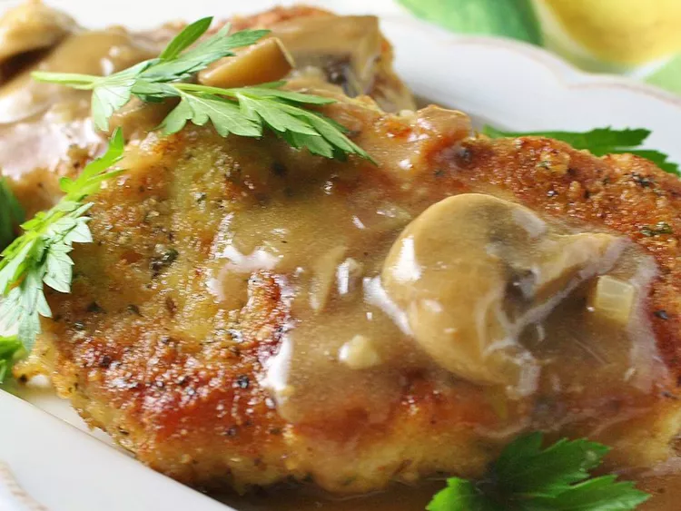

Butter Schnitzel
This butter schnitzel is incredible! I have been to Germany, and during my travels, a good friend of mine made this for me. I have duplicated and improved upon his recipe

Prep Time: 25 mins
Cook Time: 30 mins
Total Time: 55 mins
Servings: 12
Ingredients
- 12 boneless pork loin chops, 3/4 inch thick
- 2 cups bread crumbs
- 2 tablespoons grated Parmesan cheese
- 1 tablespoon dried parsley flakes
- 1 teaspoon salt
- ½ teaspoon freshly ground pepper
- ½ pound butter
- 2 cloves garlic, minced
- 1 cup dry white wine (Optional)
- 1 pound mushrooms, sliced
- 1 tablespoon cornstarch
- 2 tablespoons water
- olive oil as needed
Directions
- Pound pork chops with a spiked meat mallet until 1/4-inch thick; set aside. In a large bowl, combine bread crumbs, Parmesan cheese, parsley flakes, salt, and pepper. Press pork into crumbs to bread thoroughly; set aside.
- Melt butter in a large saucepan over medium-high heat. Stir in garlic and cook until fragrant, about 30 seconds. Pour in wine and sliced mushrooms. Allow to simmer and cook until mushrooms have softened, about 10 minutes. Stir together cornstarch and water, then add to mushroom sauce. Simmer until sauce has thickened, then remove from the heat and set aside.
- Meanwhile, heat a few tablespoons of olive oil in a large, nonstick skillet over medium-high heat. Fry the pork cutlets a few at a time until golden brown and cooked through, 1 to 2 minutes per side. Serve with reserved mushroom sauce.
Nutrition Facts
Per serving:
Calories
351
Total Fat 23g Saturated Fat 12g Cholesterol 73mg Sodium 474mg Total Carbohydrate 16g Dietary Fiber 1g Total Sugars 2g Protein 17g Vitamin C 1mg Calcium 62mg Iron 2mg Potassium 387mg